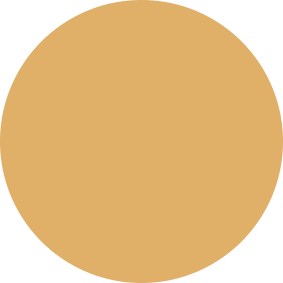

Hello, I'm
_
Just another high schooler from Dhaka, BD, who watches cat videos on his Arch Linux powered PC.

Hello, I'm
Just another high schooler from Dhaka, BD, who watches cat videos on his Arch Linux powered PC.

About which I tell her mother.
There was once a time in r/unixporn when people suddenly fell into love making their own fetch tools similar to Neofetch, but not remotely close to it I guess. Inspired from others, I and @mdgaziur also started working on this fetch tool - Sysfex!
To most of the people using Linux, Xfce is just miserable. r/unixporn was actually my main reason to switch to Linux, back in 2020. All those neat desktops there often made me jealous and so. So here I am! With some of my very own highly customized Xfce desktops
Master of none